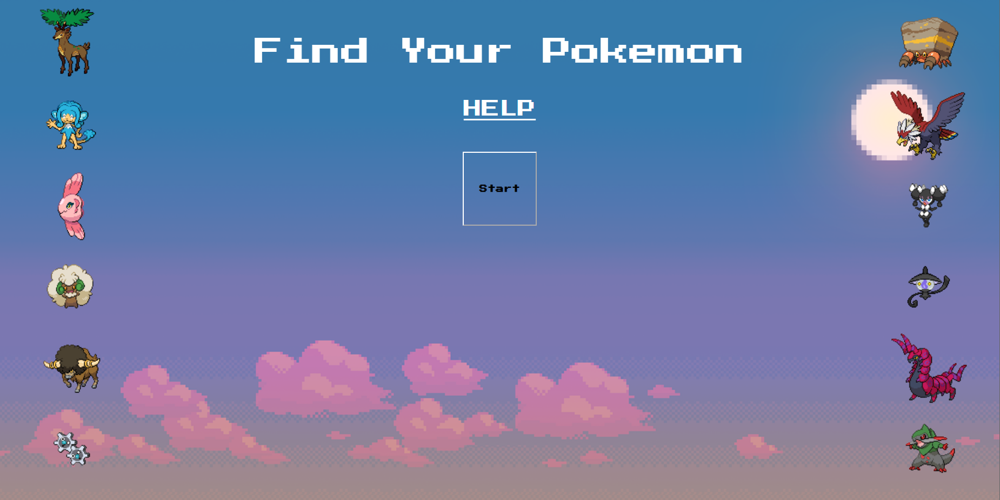

This is a functional Pokemon identifier which I coded in HTML, CSS, and Javascript. The script takes the user's birth information
and then identifies a Pokemon based on this information. The website plays a unique sound and displays a unique image for each
pokemon. When designing this website, I prioritized functionality over design, but still made sure that the UI was generally
visually pleasing.
In terms of the script, I used two loops. The first loop occurs 12 times, and creates a button that corresponds
with each of the 12 months. The second loop occurs a number of times equal to the number of days in the selected month. This ensures
that the user can only enter valid birthdates. The script stores the birth information in an array, and then checks it using a series
of "else ifs" that go through every possible birthdate. The script is written in such a way that the process is infinitely repeatable.
I did this by making sure the birthdate reader only pays attention to the most recent values entered by the user. This way, if the user
enters multiple birthdates, the script will give a different response for each one.
I used a 16-bit video game style for the UI. I did this in order to match the theme of the website. Originally, I used high quality
images for each of the Pokemon. I later changed these images to be 16 bit, in order to achieve visual cohesion. The font also contributes
to the visual theme.